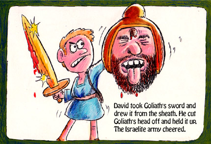

1 Now the Philistines gathered their armies together to battle, and were gathered at Sochoh, which belongs to Judah; they encamped between Sochoh and Azekah, in Ephes Dammim.
2 And Saul and the men of Israel were gathered together, and they encamped in the Valley of Elah, and drew up in battle array against the Philistines.
3 The Philistines stood on a mountain on one side, and Israel stood on a mountain on the other side, with a valley between them.
4 And a champion went out from the camp of the Philistines, named Goliath, from Gath, whose height was six cubits and a span.
5 He had a bronze helmet on his head, and he was armed with a coat of mail, and the weight of the coat was five thousand shekels of bronze.
6 And he had bronze armor on his legs and a bronze javelin between his shoulders.
7 Now the staff of his spear was like a weaver’s beam, and his iron spearhead weighed six hundred shekels; and a shield-bearer went before him.
8 Then he stood and cried out to the armies of Israel, and said to them, “Why have you come out to line up for battle? Am I not a Philistine, and you the servants of Saul? Choose a man for yourselves, and let him come down to me.
9 If he is able to fight with me and kill me, then we will be your servants. But if I prevail against him and kill him, then you shall be our servants and serve us.”
10 And the Philistine said, “I defy the armies of Israel this day; give me a man, that we may fight together.”
11 When Saul and all Israel heard these words of the Philistine, they were dismayed and greatly afraid.
David was the son of that Ephrathite of Bethlehem Judah, whose name was Jesse, and who had eight sons. And the man was old, advanced in years, in the days of Saul.
13 The three oldest sons of Jesse had gone to follow Saul to the battle. The names of his three sons who went to the battle were Eliab the firstborn, next to him Abinadab, and the third Shammah.
14 David was the youngest. And the three oldest followed Saul.
15 But David occasionally went and returned from Saul to feed his father’s sheep at Bethlehem.
16 And the Philistine drew near and presented himself forty days, morning and evening.
17 Then Jesse said to his son David, “Take now for your brothers an ephah of this dried grain and these ten loaves, and run to your brothers at the camp.
18 And carry these ten cheeses to the captain of their thousand, and see how your brothers fare, and bring back news of them.”
19 Now Saul and they and all the men of Israel were in the Valley of Elah, fighting with the Philistines.
20 So David rose early in the morning, left the sheep with a keeper, and took the things and went as Jesse had commanded him. And he came to the camp as the army was going out to the fight and shouting for the battle.
21 For Israel and the Philistines had drawn up in battle array, army against army.
22 And David left his supplies in the hand of the supply keeper, ran to the army, and came and greeted his brothers.
23 Then as he talked with them, there was the champion, the Philistine of Gath, Goliath by name, coming up from the armies of the Philistines; and he spoke according to the same words. So David heard them.
24 And all the men of Israel, when they saw the man, fled from him and were dreadfully afraid.
25 So the men of Israel said, “Have you seen this man who has come up? Surely he has come up to defy Israel; and it shall be that the man who kills him the king will enrich with great riches, will give him his daughter, and give his father’s house exemption from taxes in Israel.”
26 Then David spoke to the men who stood by him, saying, “What shall be done for the man who kills this Philistine and takes away the reproach from Israel? For who is this uncircumcised Philistine, that he should defy the armies of the living God?”
27 And the people answered him in this manner, saying, “So shall it be done for the man who kills him.”
28 Now Eliab his oldest brother heard when he spoke to the men; and Eliab’s anger was aroused against David, and he said, “Why did you come down here? And with whom have you left those few sheep in the wilderness? I know your pride and the insolence of your heart, for you have come down to see the battle.”
29 And David said, “What have I done now? Is there not a cause?”
30 Then he turned from him toward another and said the same thing; and these people answered him as the first ones did.
31 Now when the words which David spoke were heard, they reported them to Saul; and he sent for him. 32 Then David said to Saul, “Let no man’s heart fail because of him; your servant will go and fight with this Philistine.”
33 And Saul said to David, “You are not able to go against this Philistine to fight with him; for you are a youth, and he a man of war from his youth.”
34 But David said to Saul, “Your servant used to keep his father’s sheep, and when a lion or a bear came and took a lamb out of the flock,
35 I went out after it and struck it, and delivered the lamb from its mouth; and when it arose against me, I caught it by its beard, and struck and killed it.
36 Your servant has killed both lion and bear; and this uncircumcised Philistine will be like one of them, seeing he has defied the armies of the living God.”
37 Moreover David said, “The Lord, who delivered me from the paw of the lion and from the paw of the bear, He will deliver me from the hand of this Philistine.”
And Saul said to David, “Go, and the Lord be with you!”
38 So Saul clothed David with his armor, and he put a bronze helmet on his head; he also clothed him with a coat of mail.
39 David fastened his sword to his armor and tried to walk, for he had not tested them. And David said to Saul, “I cannot walk with these, for I have not tested them.” So David took them off.
40 Then he took his staff in his hand; and he chose for himself five smooth stones from the brook, and put them in a shepherd’s bag, in a pouch which he had, and his sling was in his hand. And he drew near to the Philistine.
41 So the Philistine came, and began drawing near to David, and the man who bore the shield went before him.
42 And when the Philistine looked about and saw David, he disdained him; for he was only a youth, ruddy and good-looking.
43 So the Philistine said to David, “Am I a dog, that you come to me with sticks?” And the Philistine cursed David by his gods.
44 And the Philistine said to David, “Come to me, and I will give your flesh to the birds of the air and the beasts of the field!”
45 Then David said to the Philistine, “You come to me with a sword, with a spear, and with a javelin. But I come to you in the name of the Lord of hosts, the God of the armies of Israel, whom you have defied.
46 This day the Lord will deliver you into my hand, and I will strike you and take your head from you. And this day I will give the carcasses of the camp of the Philistines to the birds of the air and the wild beasts of the earth, that all the earth may know that there is a God in Israel.
47 Then all this assembly shall know that the Lord does not save with sword and spear; for the battle is the Lord’s, and He will give you into our hands.”
48 So it was, when the Philistine arose and came and drew near to meet David, that David hurried and ran toward the army to meet the Philistine.
49 Then David put his hand in his bag and took out a stone; and he slung it and struck the Philistine in his forehead, so that the stone sank into his forehead, and he fell on his face to the earth.
50 So David prevailed over the Philistine with a sling and a stone, and struck the Philistine and killed him. But there was no sword in the hand of David.
51 Therefore David ran and stood over the Philistine, took his sword and drew it out of its sheath and killed him, and cut off his head with it.
And when the Philistines saw that their champion was dead, they fled.

52 Now the men of Israel and Judah arose and shouted, and pursued the Philistines as far as the entrance of the valley[a] and to the gates of Ekron. And the wounded of the Philistines fell along the road to Shaaraim, even as far as Gath and Ekron.
53 Then the children of Israel returned from chasing the Philistines, and they plundered their tents.
54 And David took the head of the Philistine and brought it to Jerusalem, but he put his armor in his tent.
55 When Saul saw David going out against the Philistine, he said to Abner, the commander of the army, “Abner, whose son is this youth?”
And Abner said, “As your soul lives, O king, I do not know.”
56 So the king said, “Inquire whose son this young man is.”
57 Then, as David returned from the slaughter of the Philistine, Abner took him and brought him before Saul with the head of the Philistine in his hand. 58 And Saul said to him, “Whose son are you, young man?”
So David answered, “I am the son of your servant Jesse the Bethlehemite.”